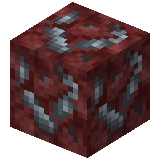

About
Nether smoky quartz ore is an ore found in the Nether, and is the source of smoky quartz.
Nether smoky quartz is a mineral found in the Nether that is used for crafting decorative blocks.
Obtaining
Natural generation
Nether smoky quartz ore can generate in the Nether in the form of ore blobs. Nether smoky quartz ore attempts to replace netherrack 16 times per chunk in blobs of size 0-24, from levels 10 to 117, in all Nether biomes. Unlike normal nether quartz ore, nether smoky quartz ore attempts to generate 16 times per chunk in basalt deltas as well.
Breaking
Nether smoky quartz ore can be mined with any pickaxe. If mined by hand, it drops nothing. If mined with Silk Touch, the block drops itself. Otherwise, it drops 1 nether smoky quartz (up to 4 smoky quartz when mined with Fortune III). It also drops 2–5 experience when broken.
Usage
Crafting


Craft one smoky quartz block by placing nether smoky quartz in a two-by-two square in a crafting table.
Nether Smoky Quartz


| Renewable | No |
| Biome | Nether (All) |
| Stackable | Yes (64) |
| Waterloggable | No |
| Tool | Pickaxe |
| Blast Resistance | 3 |
| Hardness | 3 |
| Luminous | No |
| Transparent | No |
| Catches fire from lava | No |
| Note block instrument | Bass Drum |
| Sulfur cube archetype | Slow Bouncy |